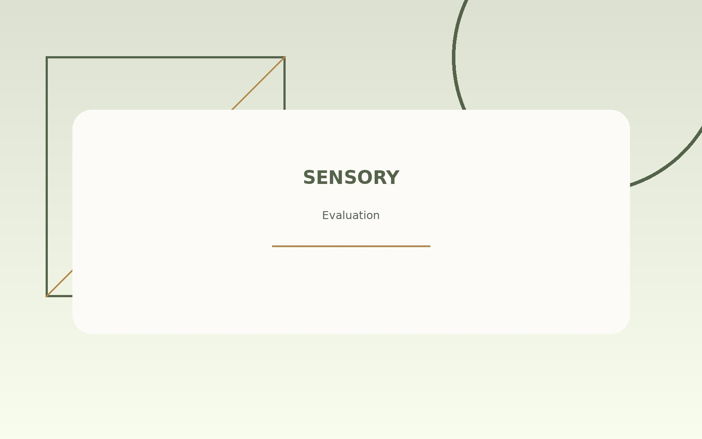
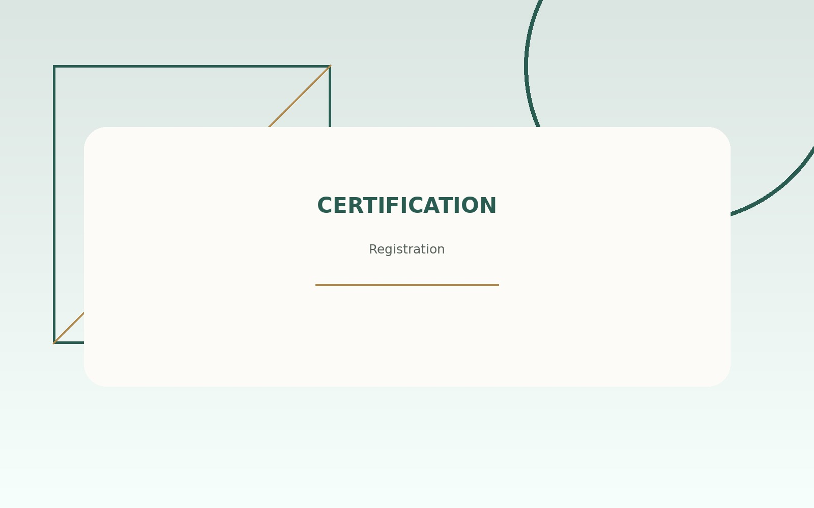
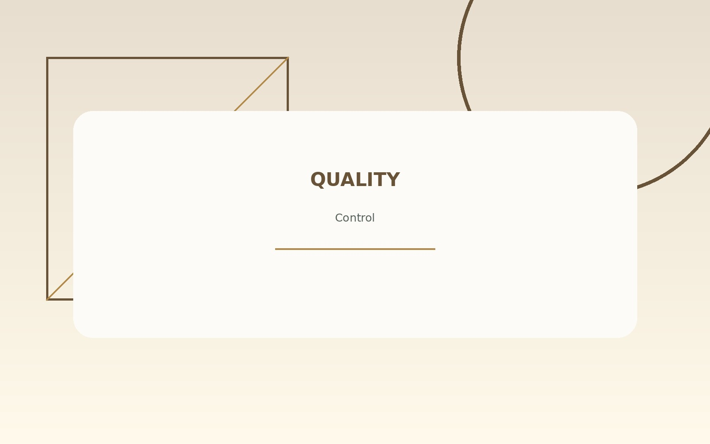

Food Safety
Food SafetyGMP and HACCP Evaluation for a Small Food Business
Evaluation of food production facilities based on Good Manufacturing Practices and preventive food safety principles.
GMPHACCPObservation
Selected Work
Explore academic and practical projects across food safety, quality control, product development, sensory evaluation, and certification.
Food SafetyEvaluation of food production facilities based on Good Manufacturing Practices and preventive food safety principles.
 Product Development
Product DevelopmentDevelopment and evaluation of an innovative product through formulation, processing, packaging, and market analysis.

Sensory EvaluationAnalysis of consumer responses using hedonic, ranking, triangle, and paired comparison test methods.

CertificationSupport for documents, production process review, labeling, and processed food registration requirements.

Quality ControlEvaluation of product quality parameters and preparation of recommendations for process improvement.
More to Explore